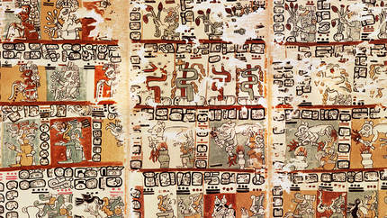

Why People used Mayan script to communitcate, write down information, and make books. Mayan script was also considered a sacred gift from the gods, because it gave early mayans a means of communication. 
People used Mayan script to communitcate, write down information, and make books. Mayan script was also considered a sacred gift from the gods, because it gave early mayans a means of communication.